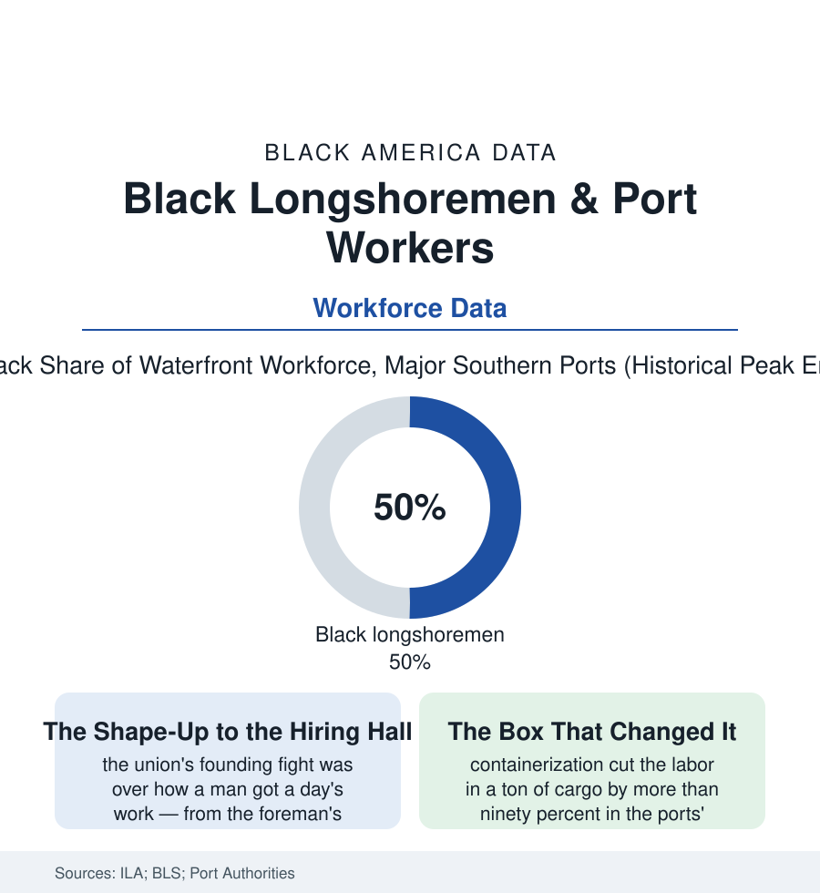

Black Employment
Longshoremen: The Dockworkers Who Moved the World's Cargo by Hand
Black longshoremen were the muscle of the Atlantic and Gulf ports for a century — a union stronghold whose numbers the container remade. The port workforce data.

Before the container, cargo moved at the speed of men's backs — and on the docks of the Atlantic and Gulf, a very large share of those backs were Black: the longshore workforce of ports from Baltimore to New Orleans ran, at its mid-century peak, half or more Black in the Southern harbors in the port records, organized in locals that were among the strongest — and most complicated — institutions in Black labor history. The modern waterfront employs a fraction of the hands at a multiple of the wages, behind gates and certifications. This article reads the dock file.
The Shape-Up and the Hall
The occupation's original sin was its hiring: the shape-up, the morning gathering on the pier where the foreman's eye chose the day's gang from the crowd — a system whose corruption and humiliation the waterfront literature documents in every port, and whose abolition was the union movement's first demand. The International Longshoremen's Association's structure wrote race into the remedy's architecture: in the Southern ports the ILA organized in paired locals — one Black, one white, dividing the work by negotiated share in the ports' famous (and fraught) fifty-fifty systems of places like New Orleans and Galveston — an arrangement that delivered Black dockers a guaranteed half of the work and a union card's wage in an era when both were rarities, at the price of a segregated structure the civil-rights era would eventually sue and merge away. The wage itself was the story's center: longshore pay, won by the industry's chokepoint power (a struck port bleeds by the hour), stood at the top of the blue-collar table in the postwar decades in the BLS data — the Black longshoreman's household income in the port cities' census rows running with the teachers' and the Pullman porters' of the earlier files, the dock money building the neighborhoods of the Baltimore and Charleston profiles. The work's danger matched the sanitation file's: the cargo hook, the shifting load, the hold's dark — the injury and fatality data of the waterfront among the era's worst, the compensation fights written into maritime law's own statutes.
The Container: Productivity as a Workforce Event
Then the box. Containerization's labor arithmetic is the starkest in this section: the cost of loading a ship fell by more than ninety percent in the ports' productivity data across the container decades, and the workforce fell with it — the great ports' registered longshore workforces shrinking from tens of thousands to thousands in the waterfront commissions' counts, the work concentrating into crane operators, checkers, and equipment trades behind TWIC credentials and certifications. The transition's terms are the file's great negotiation: the container-royalty and guaranteed-income funds the ILA won on the East and Gulf coasts (the automation tax, decades before the term existed — the union pricing the machine's arrival into the contract), the jurisdiction fights over who operates the new machines, and the demographic sorting inside the shrinkage (the seniority systems protecting the incumbent — disproportionately, in the Southern ports, the Black locals' members' latter years — while the hiring gate closed behind them, the workforce aging in place in the port data's own age tables). The modern port's Black workforce is smaller, credentialed, and still outsized in the Southern harbors' data — the crane cab and the terminal trades carrying the local's line — while the ports themselves grew into the logistics economy of the transportation file, the dock's chokepoint now exercised over cranes and chassis by a workforce a tenth its grandfather's size at wages the automation funds defend.
Reading the Dock Data
Half the waterfront, the top of the blue-collar wage table, and a union that taxed the container before Silicon Valley had the phrase: the longshore file is the employment section's proof that the wage was never about the work's dignity in the market's eyes — it was about position. The docks held the economy's throat, briefly, by hand. The hands the port records count were, in the harbors of the Black South, very often the hands in this atlas — and the income they carried home built half the neighborhoods in the cities section.
More in Black Employment
The Black Unemployment Rate: The Two-to-One Pattern
Black unemployment runs at roughly twice the White rate — 5.5 percent against 3.3 percent in annual averages — a ratio stable across five decades of federal data. How it is measured and why it persists.
Black Median Weekly Earnings: The 80-Cent Ratio
Black full-time workers earn a median of about $900 a week — roughly 80 cents for every dollar White workers earn. The BLS earnings data by group, gender, and occupation.
Black Labor Force Participation: Working at National Rates
Black labor force participation runs at roughly the national rate — and Black women participate at higher rates than White women. The BLS participation data.
Source: International Longshoremen's Association records; U.S. Bureau of Labor Statistics; Waterfront Commission and port authority reports; National Archives labor collections.